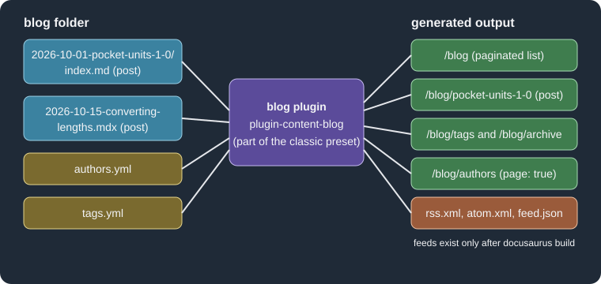

Blog and Pages
|
This content was generated with the assistance of AI and should be verified against the official documentation before being relied on in production. |
Docusaurus ships two content plugins besides the documentation plugin: the blog plugin, which publishes dated posts with
authors, tags and feeds, and the pages plugin, which turns files under src/pages into standalone routes. Both are part
of the classic preset. This page was written against Docusaurus 3.10.2 and checked on 2026-10-26. The examples document
Pocket Units, a tiny units-conversion library for C# and Python, and were built with a site generated by
create-docusaurus 3.10.2 (classic template, TypeScript) on Node.js 24.
What the two plugins do
The blog plugin (@docusaurus/plugin-content-blog) reads every Markdown or MDX file in the blog folder, extracts a
date, title, authors and tags, and generates the routes shown in the figure: a paginated list, one page per post, tag
pages, an archive, optional author pages and, in production builds only, feed files. The pages plugin
(@docusaurus/plugin-content-pages) is much simpler: each file under src/pages becomes one route that mirrors its path.
Neither plugin needs to be installed when the classic preset is used; both are configured through the preset options
blog and pages. The installation page
shows where these folders sit in a project, and
the configuration page covers the surrounding config file.

The figure shows the inputs of the blog plugin on the left and the routes it generates on the right. The feeds are the
only generated files that are missing during docusaurus start.
Setting up the blog
A site needs a blog folder and, to be reachable from the navbar, a navbar item. The classic template already contains
both. The complete configuration below is the one used for the examples on this page; it was built successfully.
import type {Config} from '@docusaurus/types';
import type * as Preset from '@docusaurus/preset-classic';
const config: Config = {
title: 'Pocket Units',
tagline: 'Convert lengths and masses in C# and Python',
url: 'https://units.example.com',
baseUrl: '/',
onBrokenLinks: 'throw',
presets: [
[
'classic',
{
docs: {sidebarPath: './sidebars.ts'},
blog: {
blogTitle: 'Pocket Units blog',
blogDescription: 'News and tutorials about Pocket Units',
postsPerPage: 5,
blogSidebarTitle: 'All posts',
blogSidebarCount: 'ALL',
showReadingTime: true,
feedOptions: {
type: 'all',
title: 'Pocket Units feed',
copyright: 'Copyright Example',
limit: 20,
xslt: true,
},
onInlineTags: 'warn',
onInlineAuthors: 'warn',
onUntruncatedBlogPosts: 'warn',
},
pages: {
path: 'src/pages',
routeBasePath: '/',
},
theme: {customCss: './src/css/custom.css'},
} satisfies Preset.Options,
],
],
themeConfig: {
navbar: {
title: 'Pocket Units',
items: [
{to: '/blog', label: 'Blog', position: 'left'},
{to: '/units', label: 'Units', position: 'left'},
],
},
} satisfies Preset.ThemeConfig,
};
export default config;Source: Docusaurus docs: Blog
The main blog options, with their defaults from the plugin reference, are these.
| Option | Default | Effect |
|---|---|---|
|
|
Content folder, relative to the site directory. |
|
|
URL segment of the blog; |
|
|
Title and meta description of the list page. |
|
|
Posts per list page; |
|
|
Posts in the blog sidebar; |
|
|
Heading of the sidebar. |
|
|
URL segments appended to |
|
|
Glob patterns that select the files treated as posts. |
|
|
Direction of the post order. |
|
|
Show the "min read" estimate; the callback customizes it, for example with |
|
|
Show Git-derived data; needs full Git history, so CI checkouts must not be shallow. |
|
|
Authors file, relative to the blog folder. |
|
|
Tags file, relative to the blog folder. |
|
|
|
|
both comment forms |
Regular expression that marks the end of the summary. |
|
none |
Async callback that can filter or modify posts. |
The plugin reference also lists replaceable page components (blogListComponent, blogPostComponent,
blogTagsListComponent, blogTagsPostsComponent, blogArchiveComponent, blogAuthorsListComponent and
blogAuthorsPostsComponent) and the MDX plugin lists remarkPlugins, rehypePlugins, recmaPlugins,
beforeDefaultRemarkPlugins and beforeDefaultRehypePlugins.
Writing posts
A post is a Markdown or MDX file in blog. Docusaurus can read the date from the path, so the date does not have to be
in the front matter. Supported shapes include 2026-10-15-converting-lengths.mdx, 2026-10-01-pocket-units-1-0/index.md
(a folder per post, which is convenient for co-locating images), 2026/10/15/converting-lengths.md and a date folder
followed by the file name. The documentation recommends choosing one pattern and applying it everywhere. If the front
matter has a date, it can carry a time, which orders several posts of the same day; without any date Docusaurus falls
back to the file creation time.
---
title: Pocket Units 1.0 is out
description: The first stable release of Pocket Units for C# and Python.
slug: pocket-units-1-0
authors: [ada, grace]
tags: [releases, tutorials, announcements]
---
Pocket Units 1.0 converts lengths and masses in C# and Python.
<!-- truncate -->
## What is new
* `Length.Convert` in C#.
* `convert_length` in Python.Source: Docusaurus docs: Blog
The front matter fields of a post, from the plugin reference, are summarized below.
| Field | Type | Meaning |
|---|---|---|
|
string |
Post title; defaults to the first Markdown heading. |
|
string |
Overrides the SEO title in the page head when it should differ from the displayed title. |
|
string, list, string |
Meta description (default: first line of content), keywords meta tag, and the |
|
string |
Post URL below |
|
string |
Overrides the date taken from the file name; a time is allowed. |
|
key, object or list of both |
Authors of the post (see below). The |
|
list |
Tag keys from |
|
string |
Label in the blog sidebar instead of the title. |
|
boolean |
Visible during development only. |
|
boolean |
Built and reachable by direct link, but hidden in production, not indexed and left out of sitemaps. |
|
boolean, 2 to 6, 2 to 6 |
Table of contents control (levels default to 2 and 3). |
|
|
Overrides the Git-derived last-update information. |
In the scratch build the post marked draft: true produced no route, no feed item and no sitemap entry, while the others
did.
The truncate marker
The blog list page shows each post as a summary: everything above the truncate marker. The part above the marker must be
standalone renderable Markdown. Two comment forms are accepted by default, because the default truncateMarker
expression matches both <!-- truncate --> and {/* truncate */}. The documentation recommends the HTML comment in
.md files and the JSX (MDX) comment in .mdx files.
---
title: Converting lengths
authors: grace
tags: [tutorials]
date: 2026-10-15T09:30
---
A short tutorial on converting a length between two units.
{/* truncate */}
Call `convert_length(12, "km", "m")` and you get `12000.0`.Source: Docusaurus docs: Blog
The HTML comment is part of the syntax that Docusaurus 3 is phasing out of Markdown files, because MDX itself does not
accept HTML comments. The markdown.mdx1Compat.comments option keeps them working and is enabled by default in v3, but
it is turned off by the mdx1CompatDisabledByDefault v4 flag. That matters in practice: a site created by
create-docusaurus 3.10.2 contains future: { v4: true }, and in that site a post with <!-- truncate --> failed to
compile in the scratch build. Switching to the JSX comment, or re-enabling the compatibility option, fixed it. The
four outcomes were:
| Configuration | Marker in a .md post |
Result |
|---|---|---|
|
|
Built. |
|
|
MDX compilation failed. |
|
|
Built; the summary was cut at the marker. |
|
|
Built. |
The error printed by the failing build was:
[ERROR] Client bundle compiled with errors therefore further build is impossible.
╰─▶ × Error: MDX compilation failed for file ".../blog/2026-10-01-pocket-units-1-0/index.md"
│ Cause: Unexpected character `!` (U+0021) before name, expected a character that can start a name, such as a
│ letter, `$`, or `_` (note: to create a comment in MDX, use `{/* text */}`)The compatibility option is set as follows. The JSX comment is the successor syntax and works in both modes, so new posts should use it. See the v4 readiness page for the other flags.
import type {Config} from '@docusaurus/types';
const config: Config = {
title: 'Pocket Units',
url: 'https://units.example.com',
baseUrl: '/',
future: {v4: true},
markdown: {
mdx1Compat: {comments: true},
},
};
export default config;This excerpt was not built as a standalone file; the same two options were exercised in the larger site configuration used for the other examples.
A post without a marker is not an error by default. The list shows the whole post and the build prints a warning:
[WARNING] Docusaurus found blog posts without truncation markers:
- "blog/2026-10-20-no-marker.md"
We recommend using truncation markers (`<!-- truncate -->` or `{/* truncate */}`) in blog posts to create shorter previews on blog paginated lists.
Tip: turn this security off with the `onUntruncatedBlogPosts: 'ignore'` blog plugin option.With onUntruncatedBlogPosts: 'throw' the same condition fails the build with that message as the cause.
Authors
Authors are declared in the front matter authors field. An author needs at least a name or an image_url. There are
three ways to declare one, and they can be mixed in the same list.
-
A key into the global authors file (
authors: [ada, grace]). -
An inline object (
name,title,url,image_url,socialsand any other attribute). -
A key with overrides, written as an object with a
keyfield plus the fields to override for this post only.
The global file is blog/authors.yml (path configurable with authorsMapPath; JSON is also supported, and a localized
copy can live under i18n/<locale>/docusaurus-plugin-content-blog/authors.yml).
ada:
name: Ada Example
title: Maintainer of Pocket Units
url: https://example.com/ada
image_url: https://example.com/ada.png
email: ada@example.com
page: true
socials:
github: ada-example
grace:
name: Grace Example
title: Documentation lead
page:
permalink: /grace-postsSource: Docusaurus docs: Blog
The socials map accepts handles for the platforms x, github, twitter, linkedin, stackoverflow, instagram,
bluesky, mastodon, threads, twitch, youtube and email; other platforms take a full URL. Setting page: true
generates a page per author and an authors index; a page object with a permalink customizes the author’s URL. Only global
authors can have a page; inline authors cannot.
In the scratch build the author pages appeared below the blog route, not at the site root:
build/blog/authors
build/blog/authors/ada
build/blog/authors/grace-postsAn override and an inline author look like this.
---
title: Inline author
authors:
- key: ada
title: Lead maintainer
- name: Guest Writer
title: Guest
---
Summary.
<!-- truncate -->
Body.Source: Docusaurus docs: Blog
Because the inline author is not in authors.yml, the scratch build printed a warning, which becomes an error with
onInlineAuthors: 'throw':
[WARNING] Some blog authors used in "2026-10-23-inline-author.md" are not defined in "authors.yml":
- {"name":"Guest Writer","title":"Guest","socials":{},"key":null,"page":null}Tags
Tags are declared in the tags front matter list. A tag is either a key of the optional blog/tags.yml (path set by the
tags option; false or null disables the file) or an inline label. Each tag key may define label, permalink and
description; any part may be omitted and is inferred from the key. Predefined tags keep tag usage consistent, and
onInlineTags: 'throw' rejects every tag that is not in the file.
releases:
label: Product releases
permalink: /product-releases
description: Announcements of new Pocket Units versions.
tutorials:
label: TutorialsWith the 1.0 post above, which also uses the undeclared tag announcements, the build printed a warning and generated
these tag routes:
[WARNING] Tags [announcements] used in 2026-10-01-pocket-units-1-0/index.md are not defined in tags.yml
build/blog/tags/announcements
build/blog/tags/product-releases
build/blog/tags/tutorialsThe tag releases is served at /blog/tags/product-releases because of its permalink; /blog/tags lists all of them.
The same tags shape (and the tags file) is used by the docs plugin, described in
docs and front matter.
Feeds
Feeds are generated at build time by feedOptions, so they are only available after docusaurus build, not in
development. The default is RSS and Atom. type is 'rss', 'atom', 'json', a list of those, 'all', or null to
turn feeds off. The other options are title (default: the site title), description (default: the site title followed
by "Blog"), copyright, language, limit (default 20; false or null for all posts), xslt (style the XML feeds
so that browsers render them nicely) and createFeedItems (filter or transform items). With the configuration above the
build wrote these files, which the blog pages also advertise with alternate link tags in the page head:
build/blog/rss.xml
build/blog/atom.xml
build/blog/feed.json
build/blog/rss.xsl
build/blog/atom.xsl
build/blog/rss.css
build/blog/atom.cssTwo details matter for authors. The documentation states that RSS feeds only list an author when the author has an
email. In the scratch build, the RSS item for the 1.0 post (authors ada and grace) contained the line
ada@example.com (Ada Example) and no entry for grace, who has no email, and the JSON feed gave only the first author.
Also, the feed description stayed at the default site-title-based value because only title was overridden, so set
description when the site title is generic.
Pages in src/pages
Every .js, .jsx, .ts, .tsx, .md and .mdx file under src/pages becomes a route that follows the directory
tree: src/pages/index.js is the base URL, src/pages/foo.js is /foo, src/pages/foo/test.js is /foo/test and
src/pages/foo/index.js is /foo/. Pages have no sidebar; only documentation does. The /units page of Pocket Units is
a React page:
import type {ReactNode} from 'react';
import Layout from '@theme/Layout';
export default function Units(): ReactNode {
return (
<Layout title="Supported units" description="Units supported by Pocket Units">
<main className="container margin-vert--lg">
<h1>Supported units</h1>
<ul>
<li>Length: mm, m, km</li>
<li>Mass: g, kg</li>
</ul>
</main>
</Layout>
);
}Source: Docusaurus docs: Creating Pages
A React page exports a component. A page does not get the navbar and footer unless its content is wrapped in the
Layout component from @theme/Layout; title and description set the head metadata. A directory with an
index.tsx is preferred over a single file when the page needs a CSS module next to it, which must be imported
explicitly. A Markdown page is simpler but always uses the theme layout:
---
title: About Pocket Units
description: What Pocket Units is.
hide_table_of_contents: true
---
# About
Pocket Units is a tiny units-conversion library.Source: Docusaurus docs: Creating Pages
Markdown pages are MDX, so they can import and render React components; see
MDX and React components and
Markdown features for the syntax. The front matter fields
documented for Markdown pages are title, description, keywords, image, slug, wrapperClassName,
hide_table_of_contents, draft and unlisted. The pages plugin options (set under pages in the preset) are path
(src/pages), routeBasePath (/), include (**/*.{js,jsx,ts,tsx,md,mdx}), exclude, mdxPageComponent
(@theme/MDXPage), the MDX plugin lists, editUrl, editLocalizedFiles, showLastUpdateAuthor and
showLastUpdateTime, the last four applying to Markdown pages only.
By default files and folders whose name starts with _, test files and the __tests__ folder are not turned into
pages. The scratch site contained src/pages/_helper.tsx and no /_helper route was created. Keep reusable components
in such a place, or outside src/pages, because every other script file in the directory becomes a page.
Two files that map to the same route produce a warning, not a failure. With both about.md and about.tsx the build
printed the following and still succeeded; the page served at /about was the Markdown one in this build, although the
documentation says only that the last page created wins, so avoid relying on it:
[WARNING] Duplicate routes found!
- Attempting to create page at /about, but a page already exists at this route.
This could lead to non-deterministic routing behavior.The onDuplicateRoutes site option controls this behavior. A link to a Markdown page may use its file path
([about page](about.md)), which onBrokenLinks validates. For pages that must stay out of the sitemap but reachable,
use unlisted: true; for pages under construction, draft: true.
Advanced layouts
Two documented variations change the shape of the site.
-
Blog-only mode serves the blog from the site root. Set
routeBasePath: '/'in the blog options and, optionally,docs: false. The existingsrc/pages/index.jsmust then be deleted, otherwise two files claim the same route, and if the docs plugin is disabled the docs navbar items must be removed too. This mode was not built here. -
Several blogs on one site are possible by adding another instance of
@docusaurus/plugin-content-blogtoplugins, with a uniqueid, its ownrouteBasePathand its ownpathfolder. This was not built here either.
Pitfalls and version notes
-
The classic template enables
future.v4, which disables HTML comments in Markdown by default; a post that worked in a v3 site breaks as soon as the flag is on. Prefer{/* truncate */}everywhere. -
The blog warnings about inline tags, inline authors and missing truncate markers are
warnby default, which lets a CI build pass; usethrowto enforce the conventions. -
Feeds, and therefore the feed
<link>tags, exist only in production builds. Test them withdocusaurus buildanddocusaurus serve. -
showLastUpdateTimeneeds full Git history; on GitHub Actions use a checkout with full depth. -
A URL based on the file name changes when the post is renamed. Set
slugfor posts whose address must be stable. -
The reference documentation types the avatar field of the authors file as
imageURLin one place while the guide and all its examples useimage_url; this page follows the guide’s spelling.